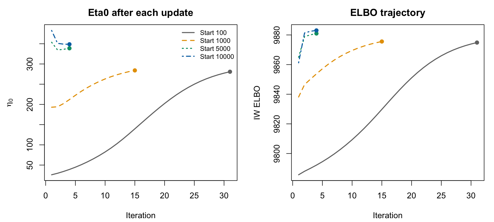
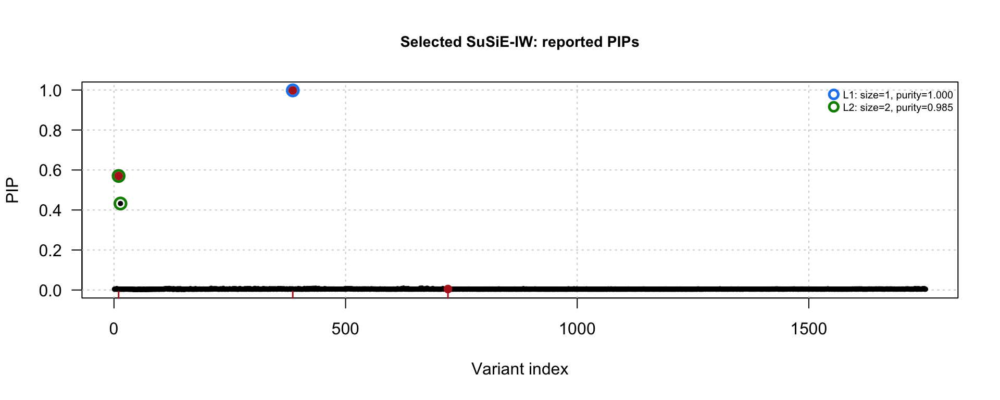

Last updated: 2026-11-03
Checks: 7 0
Knit directory: susieRobust-workflowr/
This reproducible R Markdown analysis was created with workflowr (version 1.7.2). The Checks tab describes the reproducibility checks that were applied when the results were created. The Past versions tab lists the development history.
Great! Since the R Markdown file has been committed to the Git repository, you know the exact version of the code that produced these results.
Great job! The global environment was empty. Objects defined in the global environment can affect the analysis in your R Markdown file in unknown ways. For reproduciblity it’s best to always run the code in an empty environment.
The command set.seed(20261018) was run prior to running
the code in the R Markdown file. Setting a seed ensures that any results
that rely on randomness, e.g. subsampling or permutations, are
reproducible.
Great job! Recording the operating system, R version, and package versions is critical for reproducibility.
Nice! There were no cached chunks for this analysis, so you can be confident that you successfully produced the results during this run.
Great job! Using relative paths to the files within your workflowr project makes it easier to run your code on other machines.
Great! You are using Git for version control. Tracking code development and connecting the code version to the results is critical for reproducibility.
The results in this page were generated with repository version 598dec2. See the Past versions tab to see a history of the changes made to the R Markdown and HTML files.
Note that you need to be careful to ensure that all relevant files for
the analysis have been committed to Git prior to generating the results
(you can use wflow_publish or
wflow_git_commit). workflowr only checks the R Markdown
file, but you know if there are other scripts or data files that it
depends on. Below is the status of the Git repository when the results
were generated:
Ignored files:
Ignored: .DS_Store
Ignored: .Rhistory
Ignored: .Rproj.user/
Ignored: analysis/.DS_Store
Ignored: analysis/.RData
Ignored: analysis/.Rhistory
Unstaged changes:
Modified: analysis/01-get-started.Rmd
Modified: analysis/index.Rmd
Note that any generated files, e.g. HTML, png, CSS, etc., are not included in this status report because it is ok for generated content to have uncommitted changes.
These are the previous versions of the repository in which changes were
made to the R Markdown (analysis/05-susie-iw.Rmd) and HTML
(docs/05-susie-iw.html) files. If you’ve configured a
remote Git repository (see ?wflow_git_remote), click on the
hyperlinks in the table below to view the files as they were in that
past version.
| File | Version | Author | Date | Message |
|---|---|---|---|---|
| Rmd | 598dec2 | dodat-stats | 2026-11-03 | Add tutorial for current multiple-start SuSiE-IW |
The updated susie_iw() fits four independent
initializations, then selects the converged fit with the highest IW
ELBO. The reference eigendecomposition is computed once and shared
across starts.
Use the same data as the initialization example: 1,752 SNPs, \(N=200{,}000\), \(N_0=5{,}000\), \(T=200\), three causal variants, and \(h^2=1\%\).
library(susieRobust)
packageVersion("susieRobust")[1] '0.0.0.9004'packageVersion("susieR")[1] '0.14.2'stopifnot(packageVersion("susieRobust") >= "0.0.0.9004")
example <- readRDS("data/iw-eta-profile/example.rds")
R0 <- example$R0; v <- example$v; N <- example$N
causal <- example$causalThe default starts are \(\eta_0\in\{100,1000,5000,10000\}\), with at
most 200 iterations per start and relative ELBO tolerance \(10^{-4}\). Both \(\eta_0\) and \(\lambda\) are estimated.
L = 10 is the number of fitted components, not the number
of reported credible sets.
elapsed <- system.time({
fit <- susie_iw(v=v, R0=R0, N=N, L=10,
verbose=TRUE, track_fit=TRUE)
})["elapsed"]IW initialization 1/4: eta0_init=100iteration=1 elbo=9785.645108 eta0=25.972 lambda=0.0017904 E(1/omega)=0.0088252 top=(14,223,223,223,223,223,223,223,223,223)iteration=10 elbo=9809.309353 eta0=82.379 lambda=0.0019612 E(1/omega)=0.0028912 top=(14,680,680,680,680,680,680,680,680,680)iteration=20 elbo=9851.042539 eta0=202.24 lambda=0.0023569 E(1/omega)=0.0010878 top=(14,386,386,386,386,386,386,386,386,386)iteration=30 elbo=9873.882929 eta0=277.33 lambda=0.002627 E(1/omega)=0.00066867 top=(14,386,386,386,386,386,386,386,386,386)IW initialization 2/4: eta0_init=1000iteration=1 elbo=9838.140743 eta0=193.08 lambda=0.0023251 E(1/omega)=0.0012004 top=(14,386,210,210,210,210,210,210,210,210)iteration=10 elbo=9869.525995 eta0=263.03 lambda=0.0025743 E(1/omega)=0.00074175 top=(14,386,386,386,386,386,386,386,386,386)IW initialization 3/4: eta0_init=5000iteration=1 elbo=9864.925902 eta0=353.73 lambda=0.0029185 E(1/omega)=0.00054797 top=(14,386,665,210,710,710,710,710,236,1308)IW initialization 4/4: eta0_init=10000iteration=1 elbo=9861.198841 eta0=382.94 lambda=0.0030344 E(1/omega)=0.00046783 top=(14,386,119,210,119,710,710,1308,1308,1308)verbose = TRUE prints a heading for each start, then
iteration 1 and every 10th iteration. Each line contains the IW ELBO,
\(\eta_0\), \(\lambda\), \(E(1/\omega)\), and top: the
highest-posterior-probability SNP index in each single-effect component.
These indices can repeat; they are not credible sets. The last iteration
need not be printed.
verbose only controls messages.
track_fit = TRUE retains every iteration in
fit$diagnostics$multistart$traces. The candidate summary is
always saved:
multi <- fit$diagnostics$multistart
history <- multi$history
knitr::kable(data.frame(
Start=history$initial_eta0, eta0=history$final_eta0,
ELBO=history$elbo, Iterations=history$iterations,
Converged=history$converged, Selected=history$selected
), digits=3, row.names=FALSE)| Start | eta0 | ELBO | Iterations | Converged | Selected |
|---|---|---|---|---|---|
| 100 | 280.815 | 9874.865 | 31 | TRUE | FALSE |
| 1000 | 284.107 | 9875.577 | 15 | TRUE | FALSE |
| 5000 | 338.789 | 9880.982 | 4 | TRUE | FALSE |
| 10000 | 348.709 | 9883.043 | 4 | TRUE | TRUE |
Selection requires both the relative ELBO stopping criterion and
final parameter stationarity. If no start converges, the highest
finite-ELBO fit is returned with a warning and
converged = FALSE. Exact ties use the first start.
Convergence does not establish a global optimum.
traces <- multi$traces
colors <- c("grey45", "#E69F00", "#009E73", "#0072B2")
par(mfrow=c(1, 2), mar=c(4.2, 4.5, 2.5, 1))
for (parameter in c("eta0", "elbo")) {
values <- unlist(lapply(traces, `[[`, parameter))
plot(NA, xlim=c(1, max(history$iterations)), ylim=range(values),
xlab="Iteration", ylab=if (parameter == "eta0") expression(eta[0]) else "IW ELBO",
main=if (parameter == "eta0") "Eta0 after each update" else "ELBO trajectory")
for (i in seq_along(traces)) {
d <- traces[[i]]
lines(d$iteration, d[[parameter]], col=colors[i], lty=i, lwd=2)
points(tail(d$iteration, 1), tail(d[[parameter]], 1), col=colors[i], pch=19)
}
if (parameter == "eta0") {
legend("topright", paste("Start", history$initial_eta0),
col=colors, lty=seq_along(traces), lwd=2, bty="n", cex=0.8)
}
}
par(mfrow=c(1, 1))Curves begin after the first update; points mark stopping iterations. Here the selected start is 10^{4}, with learned \(\eta_0 =\) 348.709 and \(\lambda =\) 0.002899.
Printing the returned object gives the final parameter, convergence, and credible-set summary:
fitSuSiE-IW (collapsed-R) fit
lambda: 0.00289908
eta0: 348.7088
reported CS: 2 SER fallback: FALSE
purity matrix: R0
parameter status: lambda interior ; eta0 interior
converged: TRUE After selecting the IW fit, 95% credible sets are filtered using
reference LD (minimum pairwise \(|r|\geq0.5\)) and deduplicated. If at most
one set remains, the default SER fallback replaces the reported
posterior with a single-effect RSS fit. The original IW posterior
remains in raw_fit and raw_pip. Fallback sets
are also purity-filtered, so zero reported sets is possible.
plot_pip(fit, causal=causal, R=R0, main="Selected SuSiE-IW: reported PIPs")
Circles mark reported credible sets; red points mark the true causal SNPs. This example reports 2 credible sets; SER fallback is not used.
knitr::kable(data.frame(
Step=c("Shared eigendecomposition", "Four IW fits", "Complete function call"),
Seconds=c(multi$spectrum_elapsed_seconds,
sum(history$elapsed_seconds), unname(elapsed))
), digits=3, row.names=FALSE)| Step | Seconds |
|---|---|
| Shared eigendecomposition | 3.482 |
| Four IW fits | 4.822 |
| Complete function call | 9.192 |
The complete call also includes validation, selection, credible-set reporting, and any fallback. Sharing the decomposition changes computation time, not the fitted results for the same starts. On five local examples it reduced median runtime by 17–72%; see the benchmark report.
Supply one number to run one initialization:
fit_single <- susie_iw(v=v, R0=R0, N=N, L=10, eta0_init=1000)
sessionInfo()R version 4.6.1 (2026-06-24)
Platform: aarch64-apple-darwin23
Running under: macOS Golden Gate 27.2
Matrix products: default
BLAS: /Library/Frameworks/R.framework/Versions/4.6/Resources/lib/libRblas.0.dylib
LAPACK: /Library/Frameworks/R.framework/Versions/4.6/Resources/lib/libRlapack.dylib; LAPACK version 3.12.1
locale:
[1] C.UTF-8/C.UTF-8/C.UTF-8/C/C.UTF-8/C.UTF-8
time zone: America/New_York
tzcode source: internal
attached base packages:
[1] stats graphics grDevices utils datasets methods base
other attached packages:
[1] susieRobust_0.0.0.9004 workflowr_1.7.2
loaded via a namespace (and not attached):
[1] sass_0.4.10 generics_0.1.4 stringi_1.8.9 lattice_0.22-9
[5] digest_0.6.39 magrittr_2.0.5 evaluate_1.0.5 grid_4.6.1
[9] RColorBrewer_1.1-3 fastmap_1.2.0 plyr_1.8.9 rprojroot_2.1.1
[13] jsonlite_2.0.0 Matrix_1.7-5 processx_3.9.0 whisker_0.4.1
[17] reshape_0.8.10 mixsqp_0.3-54 promises_1.5.0 httr_1.4.9
[21] scales_1.4.0 jquerylib_0.1.4 cli_3.6.6 zigg_0.0.2
[25] rlang_1.3.0 crayon_1.5.3 susieR_0.14.2 cachem_1.1.0
[29] yaml_2.3.12 otel_0.2.0 tools_4.6.1 dplyr_1.2.1
[33] ggplot2_4.0.3 httpuv_1.6.17 Rfast_2.1.5.2 vctrs_0.7.3
[37] R6_2.6.1 matrixStats_1.5.0 lifecycle_1.0.5 git2r_0.36.2
[41] stringr_1.6.0 fs_2.1.0 irlba_2.3.7 pkgconfig_2.0.3
[45] callr_3.8.0 RcppParallel_6.2.1 pillar_1.11.1 bslib_0.12.0
[49] later_1.4.8 gtable_0.3.6 glue_1.8.1 Rcpp_1.1.2
[53] xfun_0.60 tibble_3.3.1 tidyselect_1.2.1 rstudioapi_0.19.0
[57] knitr_1.51 farver_2.1.2 htmltools_0.5.9 rmarkdown_2.32
[61] compiler_4.6.1 getPass_0.2-4 S7_0.2.2